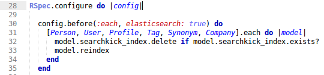
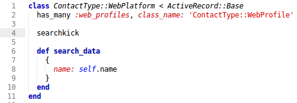
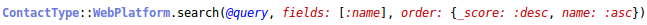

♥
searchkick
Meet the presenter
Agenda
ProDB
What's that?
What was the problem?
How we solved it
Searchkick
How you implement searchkick in your project
(using code examples of ProDB)
References
Literature or links used
What's that?
What was the problem?
↓
How we solved it
Solution: Part 1
Version >= 1.0.2
Solution: Part 2
Option 1: further development of Tire on our own
Option 2: exchanging Tire with an alternative
Our decision on solution part 2
How to implement searchkick in your project
What you need:
latest version = less bugs
Gemfile
add searchkick to your Gemfile
Test configuration
we use Rspec, so here it's spec_helper.rb
Searchable models
add searchkick to your searchable models and
define their search data
Search queries
build search queries
# pseudo code
@query = user input
if empty
@query = "*" # wildcard
Hint
searchkick on